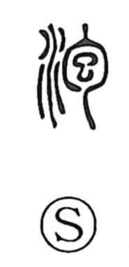

泡

Uncategorized
Kun: awa, abuku | On: hou
bubble ・ foam
Explanation
泡 is a phono-semantic character: the water element (氵) combines with 包 as the sound. In its ancient form, 包 depicted a fetus held within the belly, conveying the sense of being wrapped or contained. Placed with water, it evokes liquid swelling as it encloses air—hence “bubble, foam.” Because such bubbles burst and vanish at once, the character naturally extends to what is fleeting or comes to nothing, and it also names the very act of bubble formation.